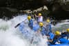
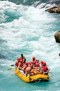
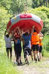
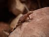
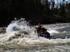

Raft Expo 4 You. The best place to enjoy being on top of the water rather than in the water. Here at Raft Expo we strive to bring the joy of rafting to everyone! Not just individuals, but families too. To acheive our goal, we have hired guides who do this because they love rafting and are willing to help you find a passion for it as well.

Raft Expo 4 You
History
The company was founded after Mr. Eberle and his friends were camping near the Yuba River. They all got the idea to hop in their large Cooler and ride the cooler downriver. After safely and miraculously making it down river, one idea lead to another and a rafting company was made. Mr. Eberle said that rafting has found a place in his heart as well as his friends, who all now own seperate businesses or work together, and now they seek to relive that moment in the cooler and help others feel that same rush of adrenaline.
Adventure Awaits You
Boutta get some sweet air time
Stilling of the water
Somebody's gotta carry the boat
Frien😁
Have a drink, its fresh